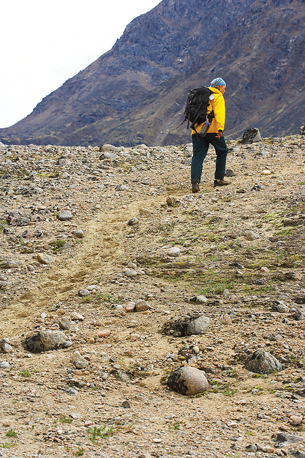

Unit A Conclusion

© 2008 Jupiterimages Corporation
In Unit A you learned about thermochemical changes. When matter undergoes physical or chemical changes, energy changes also occur. These energy changes can often be quantified and studied.
In Module 1 you learned about calorimetry. You used a calorimeter in an experiment to determine the energy content of different fuels, including biodiesel.
Studying energy change is an important component of understanding chemical change, since the events occur simultaneously. By quantifying energy changes you gained a greater insight into the characteristics of chemical bonding, including enthalpy changes and chemical bond energies.
In Module 2 you investigated the events and energy changes associated with chemical reactions from the molecular level. You learned about activation energy and the role that catalysts play in chemical processes, including the function of catalysts from the perspective of chemical energetics.
Throughout Unit A you investigated chemical energetics in the context of designing and testing materials to be used in an ecotour in your local area. In Module 1 you designed the type of tour you would like to provide to visitors to your area, and you investigated questions that influence the food and equipment to be used in your tour. In Module 2 you investigated the use of biodiesel as a vehicle fuel for your ecotour operations.
In this unit you investigated the following module questions:
- Should energy be given a higher priority when making decisions about society’s future?
- How does society use the energy of chemical changes?
- What are the impacts of energy use on the environment?
- How does society use knowledge of the energy associated with chemical processes to promote sustainability?
- In what ways have issues of energy use affected the development of past and present societies?
- What energy changes must be considered when designing chemical systems?
You should now be able to
- determine and interpret energy changes in chemical reactions
- explain and communicate energy changes in chemical reactions
 Self-Check
Self-Check
Complete the Unit A Diagnostic Self-Check to review the concepts, skills, and knowledge introduced and to assess your understanding of them.
If you have trouble answering any of the questions, try one or more of the following options:
- Go to the lesson(s) indicated for each question. Once there, review the information provided and the relevant sections of the textbook.
- View the hint associated with each question.
- Look at the answer and then work backward to understand the problem and its solution.
- Ask your teacher for help.
You understand how important it is to review material in preparation for any tests your teacher may give you and in solidifying your understanding of new concepts. Completing these questions is just one part of your review. Program of Studies information is associated with each question. You may wish to use this information to identify areas in which you need to pay particular attention. You may also answer the questions that appear at the end of each chapter and unit in the textbook.
You have already reviewed your Modules 1 and 2 concept maps or graphic organizers. Now is a good time to give them another look and add any new connections or ideas to them.